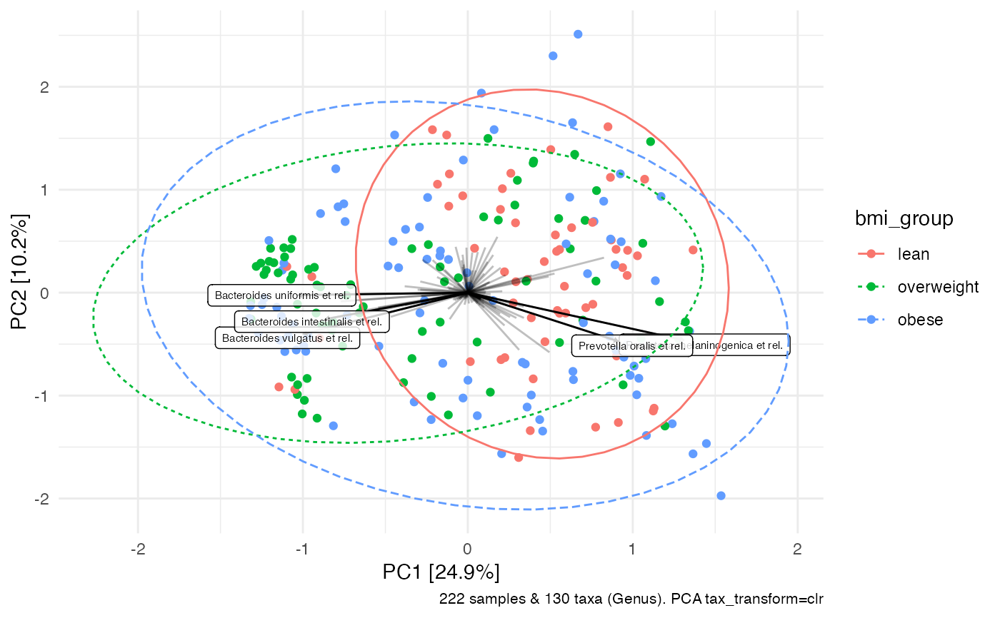
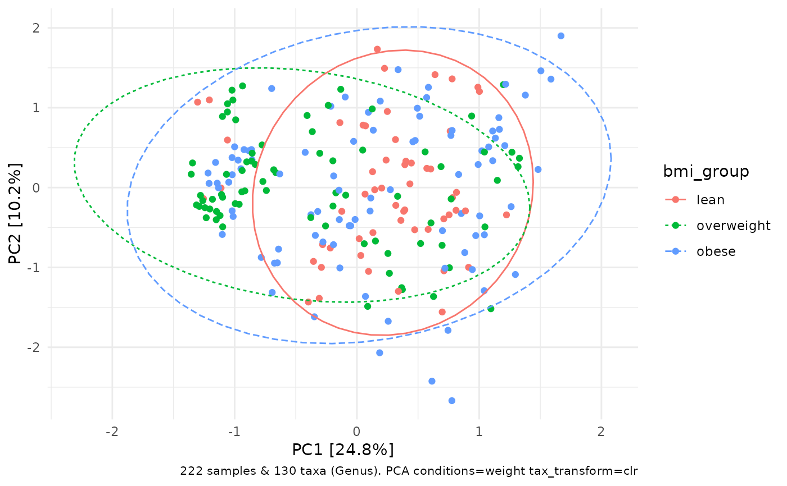
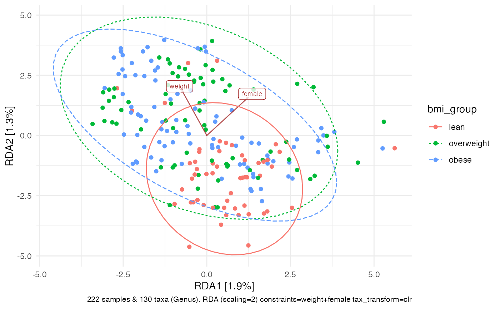
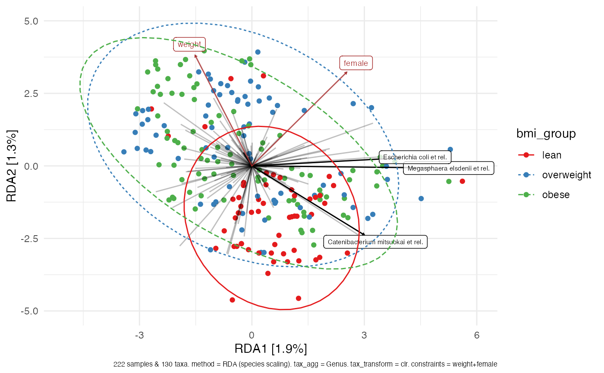
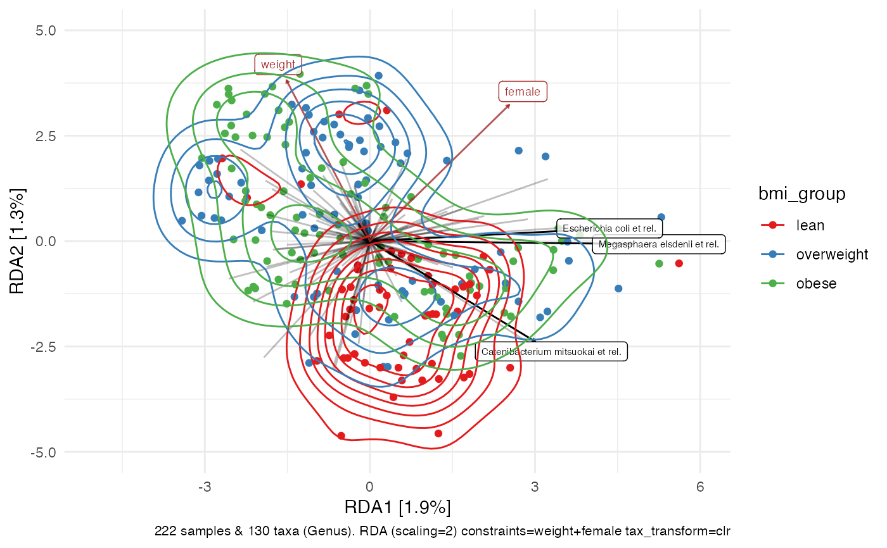
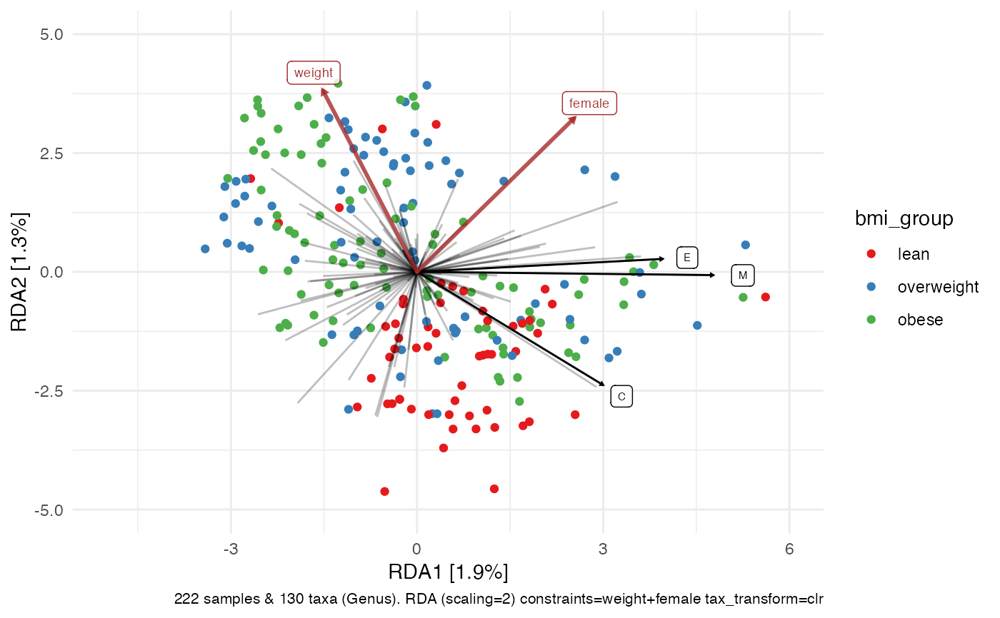
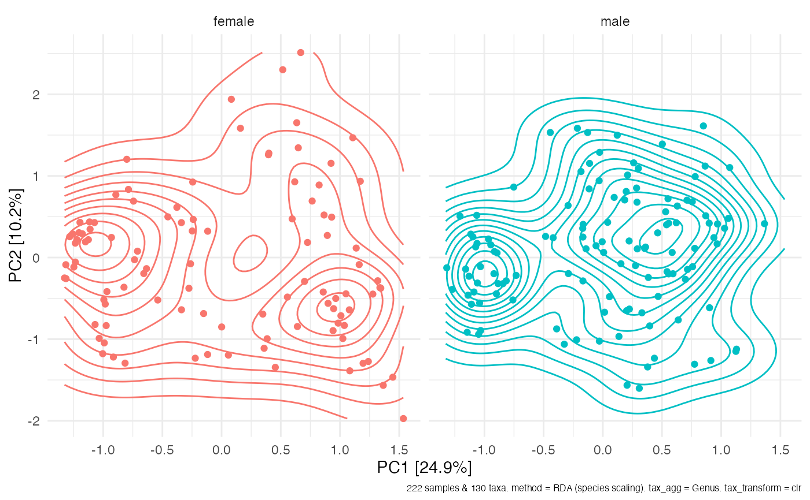
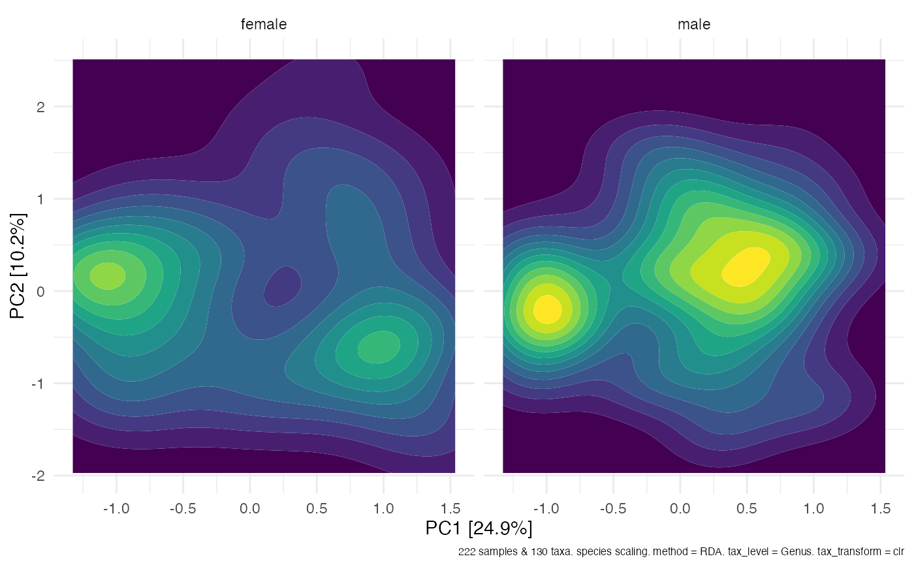
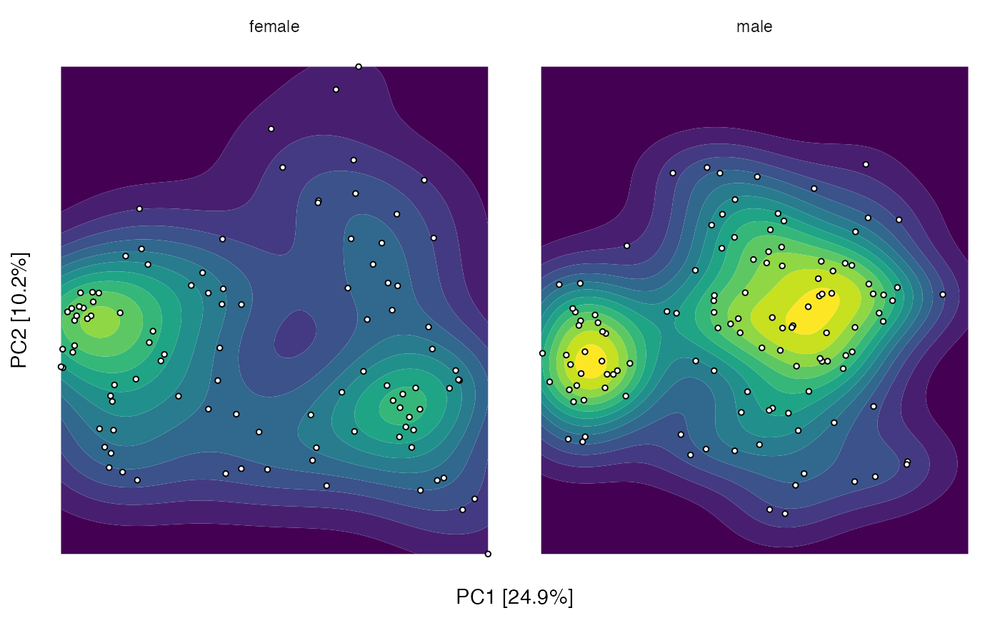

Draw ordination plot. Utilises psExtra object produced by of ord_calc.
For an extensive tutorial see the ordination vignette.
For interpretation see the the relevant pages on PCA, PCoA, RDA, or CCA on the GUide to STatistical Analysis in Microbial Ecology (GUSTA ME) website: https://sites.google.com/site/mb3gustame/
Usage
ord_plot(
data,
axes = 1:2,
plot_taxa = FALSE,
tax_vec_length = NA,
tax_vec_style_all = vec_tax_all(),
tax_vec_style_sel = vec_tax_sel(),
tax_lab_length = tax_vec_length * 1.1,
tax_lab_style = list(),
taxon_renamer = function(x) identity(x),
constraint_vec_length = NA,
constraint_vec_style = vec_constraint(),
constraint_lab_length = constraint_vec_length * 1.1,
constraint_lab_style = list(),
var_renamer = function(x) identity(x),
plot_samples = TRUE,
scaling = 2,
auto_caption = 8,
center = FALSE,
clip = "off",
expand = !center,
interactive = FALSE,
...
)Arguments
- data
psExtra object with ordination attached, i.e. output from ord_calc
- axes
which axes to plot: numerical vector of length 2, e.g. 1:2 or c(3,5)
- plot_taxa
if ord_calc method was "PCA/RDA" draw the taxa loading vectors (see details)
- tax_vec_length
taxon arrow vector scale multiplier. NA = auto-scaling, or provide a numeric multiplier yourself.
- tax_vec_style_all
list of named aesthetic attributes for all (background) taxon vectors
- tax_vec_style_sel
list of named aesthetic attributes for taxon vectors for the taxa selected by plot_taxa
- tax_lab_length
scale multiplier for label distance/position for any selected taxa
- tax_lab_style
list of style options for the taxon labels, see tax_lab_style() function.
- taxon_renamer
function that takes any plotted taxon names and returns modified names for labels
- constraint_vec_length
constraint arrow vector scale multiplier. NA = auto-scaling, or provide a numeric multiplier yourself.
- constraint_vec_style
list of aesthetics/arguments (colour, alpha etc) for the constraint vectors
- constraint_lab_length
label distance/position for any constraints (relative to default position which is proportional to correlations with each axis)
- constraint_lab_style
list of aesthetics/arguments (colour, size etc) for the constraint labels
- var_renamer
function to rename constraining variables for plotting their labels
- plot_samples
if TRUE, plot sample points with geom_point
- scaling
Type 2, or type 1 scaling. For more info, see https://sites.google.com/site/mb3gustame/constrained-analyses/redundancy-analysis. Either "species" or "site" scores are scaled by (proportional) eigenvalues, and the other set of scores is left unscaled (from ?vegan::scores.cca)
- auto_caption
size of caption with info about the ordination, NA for none
- center
expand plot limits to center around origin point (0,0)
- clip
clipping of labels that extend outside plot limits?
- expand
expand plot limits a little bit further than data range?
- interactive
creates plot suitable for use with ggiraph (used in ord_explore)
- ...
pass aesthetics arguments for sample points, drawn with geom_point using aes_string
Details
How to specify the plot_taxa argument (when using PCA, CCA or RDA):
FALSE –> plot no taxa vectors or labels
integer vector e.g. 1:3 –> plot labels for top 3 taxa (by longest line length)
single numeric value e.g. 0.75 –> plot labels for taxa with line length > 0.75
character vector e.g. c('g__Bacteroides', 'g__Veillonella') –> plot labels for the exactly named taxa
See also
tax_lab_style / tax_lab_style for styling labels
ord_explore for interactive ordination plots
ord_calc for calculating an ordination to plot with ord_plot
Examples
library(ggplot2)
data("dietswap", package = "microbiome")
# create a couple of numerical variables to use as constraints or conditions
dietswap <- dietswap %>%
ps_mutate(
weight = dplyr::recode(bmi_group, obese = 3, overweight = 2, lean = 1),
female = dplyr::if_else(sex == "female", true = 1, false = 0)
)
# unconstrained PCA ordination
unconstrained_aitchison_pca <- dietswap %>%
tax_transform("clr", rank = "Genus") %>%
ord_calc() # method = "auto" --> picks PCA as no constraints or distances
unconstrained_aitchison_pca %>%
ord_plot(colour = "bmi_group", plot_taxa = 1:5) +
stat_ellipse(aes(linetype = bmi_group, colour = bmi_group))

# you can generate an interactive version of the plot by specifying
# interactive = TRUE, and passing a variable name to another argument
# called `data_id` which is required for interactive point selection
interactive_plot <- unconstrained_aitchison_pca %>%
ord_plot(
colour = "bmi_group", plot_taxa = 1:5,
interactive = TRUE, data_id = "sample"
)
# to start the html viewer, and allow selecting points, we must use a
# ggiraph function called girafe and set some options and css
ggiraph::girafe(
ggobj = interactive_plot,
options = list(
ggiraph::opts_selection(
css = ggiraph::girafe_css(
css = "fill:orange;stroke:black;",
point = "stroke-width:1.5px"
),
type = "multiple", # this activates lasso selection (click top-right)
only_shiny = FALSE # allows interactive plot outside of shiny app
)
)
)
# remove effect of weight with conditions arg
# scaling weight with scale_cc is not necessary as only 1 condition is used
dietswap %>%
tax_transform("clr", rank = "Genus") %>%
ord_calc(conditions = "weight", scale_cc = FALSE) %>%
ord_plot(colour = "bmi_group") +
stat_ellipse(aes(linetype = bmi_group, colour = bmi_group))

# alternatively, constrain variation on weight and female
constrained_aitchison_rda <- dietswap %>%
tax_transform("clr", rank = "Genus") %>%
ord_calc(constraints = c("weight", "female")) # constraints --> RDA
#>
#> Centering (mean) and scaling (sd) the constraints and/or conditions:
#> weight
#> female
constrained_aitchison_rda %>%
ord_plot(colour = "bmi_group", constraint_vec_length = 2) +
stat_ellipse(aes(linetype = bmi_group, colour = bmi_group))

# ggplot allows additional customisation of the resulting plot
p <- constrained_aitchison_rda %>%
ord_plot(colour = "bmi_group", plot_taxa = 1:3) +
lims(x = c(-5, 6), y = c(-5, 5)) +
scale_colour_brewer(palette = "Set1")
p + stat_ellipse(aes(linetype = bmi_group, colour = bmi_group))

p + stat_density2d(aes(colour = bmi_group))

# you can rename the taxa on the labels with any function that
# takes and modifies a character vector
constrained_aitchison_rda %>%
ord_plot(
colour = "bmi_group",
plot_taxa = 1:3,
taxon_renamer = function(x) stringr::str_extract(x, "^.")
) +
lims(x = c(-5, 6), y = c(-5, 5)) +
scale_colour_brewer(palette = "Set1")

# You can plot PCoA and constrained PCoA plots too.
# You don't typically need/want to use transformed taxa variables for PCoA
# But it is good practice to call tax_transform("identity") so that
# the automatic caption can record that no transformation was applied
dietswap %>%
tax_agg("Genus") %>%
tax_transform("identity") %>%
# so caption can record (lack of) transform
dist_calc("bray") %>%
# bray curtis
ord_calc() %>%
# guesses you want an unconstrained PCoA
ord_plot(colour = "bmi_group")

# it is possible to facet these plots
# (although I'm not sure it makes sense to)
# but only unconstrained ordination plots and with plot_taxa = FALSE
unconstrained_aitchison_pca %>%
ord_plot(color = "sex", auto_caption = NA) +
facet_wrap("sex") +
theme(line = element_blank()) +
stat_density2d(aes(colour = sex)) +
guides(colour = "none")

unconstrained_aitchison_pca %>%
ord_plot(color = "bmi_group", plot_samples = FALSE, auto_caption = NA) +
facet_wrap("sex") +
theme(line = element_blank(), axis.text = element_blank()) +
stat_density2d_filled(show.legend = FALSE) +
geom_point(size = 1, shape = 21, colour = "black", fill = "white")
